Đại học Kinh tế Quốc Dân là một trong những trường có bề dày về mặt lịch sử và nổi tiếng nhất tại Hà Nội. Ngôi trường được nằm tại số 207 Giải Phóng, Đồng Tâm, Quận Hai Bà Trưng, Hà Nội.
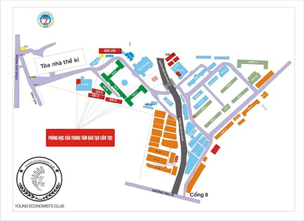 Sơ đồ giảng đường (Nguồn fb: CLB Nhà Kinh Tế Trẻ - Đại học Kinh tế Quốc dân (YEC – NEU))Hệ thống giảng đường tại đại học Kinh tế Quốc Dân
- Giảng đường B: khu giảng đường 3 tầng.
- Giảng đường B2: khu giảng đường 1 tầng.
- Giảng đường C (phòng máy): khu giảng đường 3 tầng.
- Giảng đường C: khu giảng đường 1 tầng phía sau giảng đường C (phòng máy).
- Giảng đường D: khu giảng đường 5 tầng.
- Giảng đường D2: Khu giảng đường 5 tầng, sau giảng đường B, trước nhà gửi xe cổng sau (phố Vọng).
- Giảng đường E: khu giảng đường 1 tầng (gần Trung tâm TT Thư viện).
- Giảng đường V-QTKD (Viện Quản Trị Kinh Doanh): khu đối diện cổng trường chính Trần Đại Nghĩa (phía KTX) cạnh khu nộp tiền học phí.
- Giảng đường K: Ký túc xá.
- Giảng đường G: khu giảng đường 1 tầng (bên cạnh Viện Quản trị kinh doanh).
- Ngoài ra, trong ngõ Tự do còn có thêm khu Giảng đường Nhà Trẻ (Hay còn gọi là GĐ NT) cũng khá là thân thuộc với các thế hệ sinh viên.
Tòa nhà Thế kỷ - biểu tượng của NEU
Tòa nhà thế kỷ – giảng đường A2 của ĐH Kinh tế Quốc dân có diện tích sàn 96000 m2. Đây là nơi tích hợp các khu giảng đường, thư viện và khối hành chính với tổng 147 phòng chức năng, 6 phòng hội thảo, 96 phòng làm việc và 6 thang máy. Được thiết kế dạng cầu thang xoắn ốc, giếng trời vô cùng hiện đại.
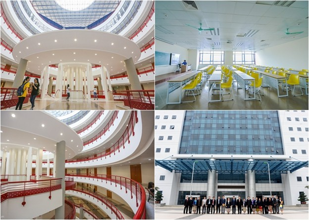 Bên trong Tòa nhà Thế kỷ (Nguồn: https://tuyensinhso.vn)Các phòng học đều có máy tính cho giáo viên, máy chiếu, âm thanh, điều hòa. Hệ thống đèn led hiện đại chạy dọc sảnh hành lang, Wifi miễn phí phủ kín trong và ngoài tòa nhà. Hệ thống kích sóng điện thoại di động, hệ thống camera giám sát từng phòng học cúng được trang bị.
Thư viện Phạm Văn Đồng
Thư viện của ĐH Kinh tế Quốc dân mang tên Phạm Văn Đồng – vị hiệu trưởng đầu tiên của trường.
Thư viện được thiết kế rất sáng tạo, mang lại sự thoải mái cho sinh viên và vô vàn đầu sách đủ mọi lĩnh vực từ chuyên ngành đến
khoa học, công nghệ, xã hội… Thậm chí, thư viện cũng là một background check-in siêu xịn cho các tín đồ mê “sống ảo” nữa đấy.
Thư viện được bố trí 4 tầng từ tầng 2 đến tầng 5 trong khu nhà A2, tuy nhiên sinh viên chủ yếu hoạt động ở tầng 3 bởi tầng 4 là các phòng làm việc và kho lưu. Thư viện mở liên tục từ 7h30 sáng đến 20h tối, từ thứ 2 – thứ 7 hàng tuần.
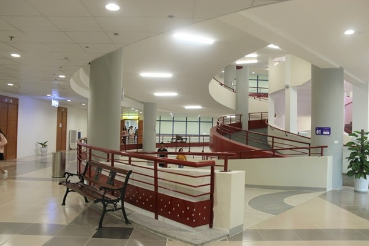 Lối vào thư viện với những cung đường uốn lượn (Nguồn: https://vietnamnet.vn)![[Có lỗi khi tải ảnh]](img/co_so_vat_chat/kinh_te-quoc_dan_thu_vien_2.jpg) Tầng 1 được thiết kế là một không gian thư viện mở (Nguồn: https://vietnamnet.vn)
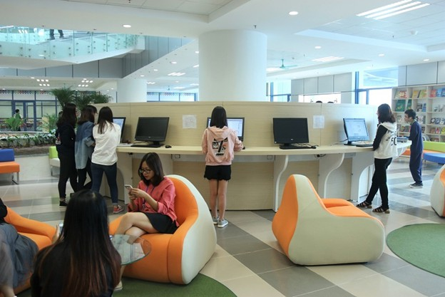
Sinh viên có thể tra cứu thông tin về tài liệu (Nguồn: https://vietnamnet.vn)
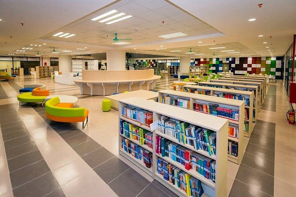
Không gian thân thiện với giới trẻ (Nguồn: https://tuyensinhso.vn)
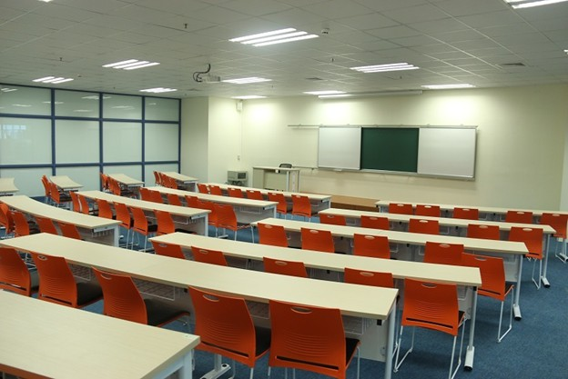
Thư viện có cả phòng họp lớn với đầy đủ máy chiếu cùng các trang thiết bị (Nguồn: https://vietnamnet.vn)
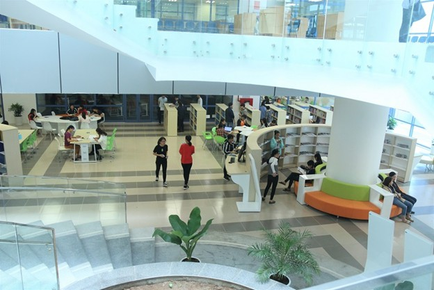
Tầng 2 chủ yếu là nơi đọc tra cứu, khảo cứu chuyên sâu. Đây là khu tài liệu sinh viên có thể mượn về như sách giáo trình, sách tham khảo… (Nguồn: https://vietnamnet.vn)
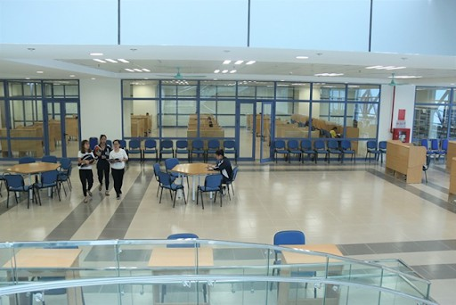
Tầng 3 là nơi phục vụ sinh viên với các tài liệu như các luận án, luận văn, đề tài nghiên cứu khoa học,… (Nguồn: https://vietnamnet.vn)
Tầng 1 được thiết kế là một không gian thư viện mở (Nguồn: https://vietnamnet.vn)
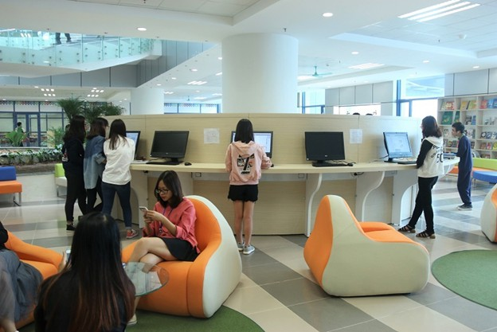
Sinh viên có thể tra cứu thông tin về tài liệu (Nguồn: https://vietnamnet.vn)
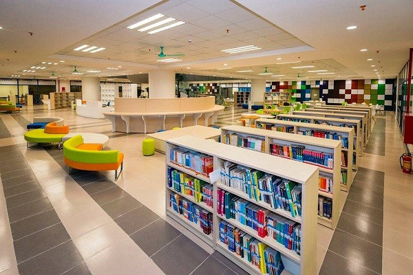
Không gian thân thiện với giới trẻ (Nguồn: https://tuyensinhso.vn)
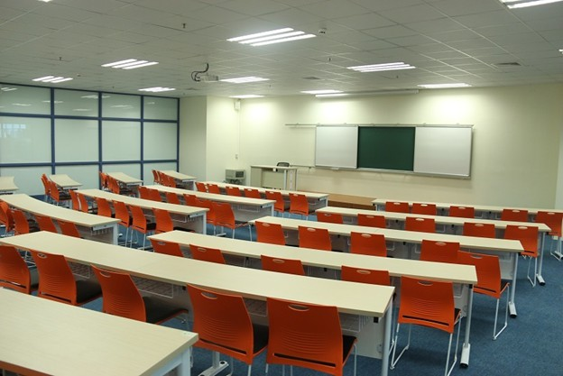
Thư viện có cả phòng họp lớn với đầy đủ máy chiếu cùng các trang thiết bị (Nguồn: https://vietnamnet.vn)
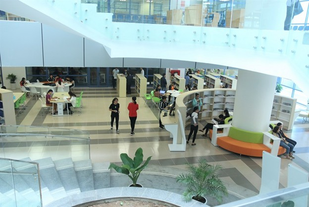
Tầng 2 chủ yếu là nơi đọc tra cứu, khảo cứu chuyên sâu. Đây là khu tài liệu sinh viên có thể mượn về như sách giáo trình, sách tham khảo… (Nguồn: https://vietnamnet.vn)
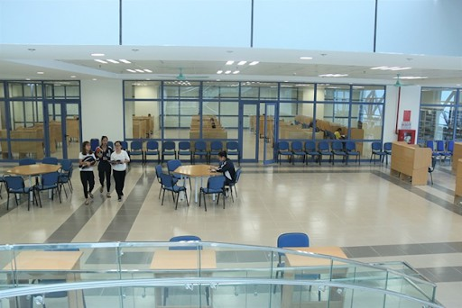
Tầng 3 là nơi phục vụ sinh viên với các tài liệu như các luận án, luận văn, đề tài nghiên cứu khoa học,… (Nguồn: https://vietnamnet.vn)
Đăng bởi Ngoc Duc
tham khảo thông tin từ
vietnamnet,
tuyensinhso
.